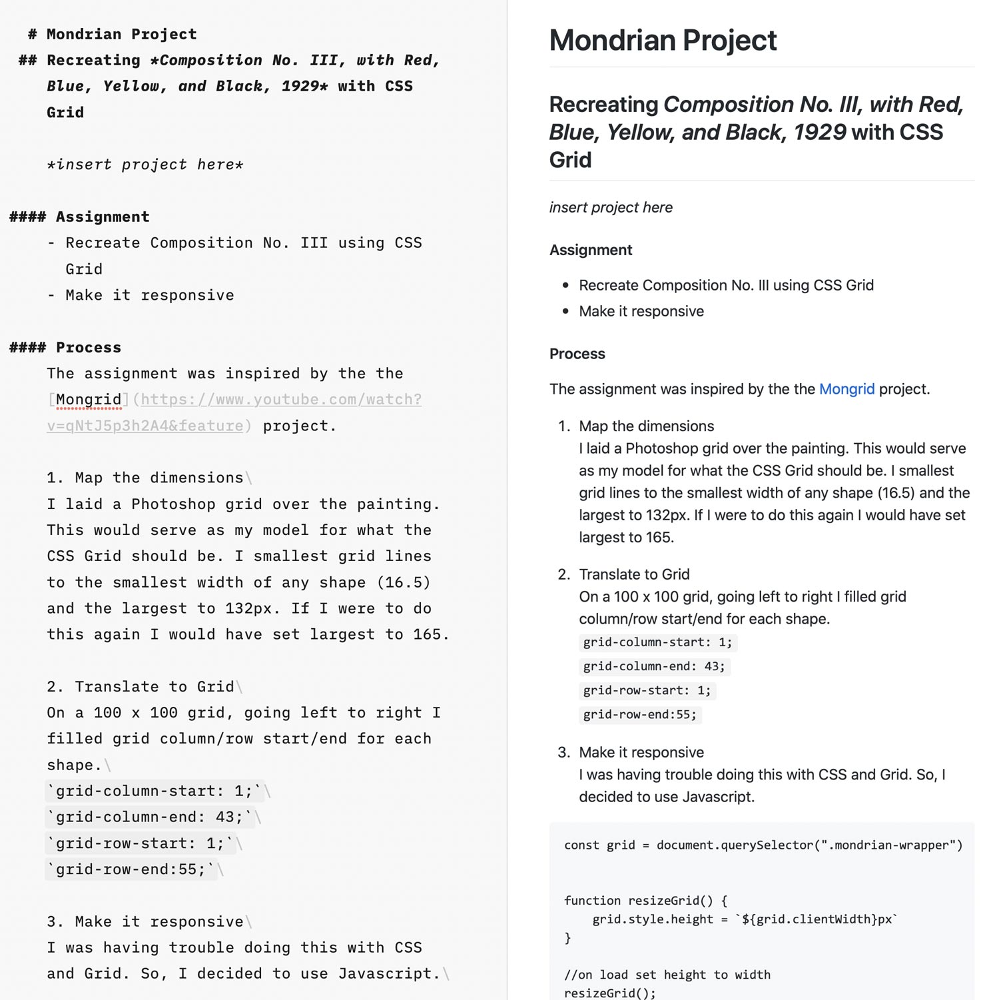

I wanted to write about the process behind the projects I'm doing. Using HTML to markup diverse text that includes code blocks, multiple headers, lists and other elements, is a dauntingly time consuming proposition. Doubly so to keep it consistent from one writeup to another.
After some research, markdown seemed the appropriate solution.
Write in markdown
Can be done in any basic text editor and a little help from a syntax cheat sheet.
Export as html
There are free tools to convert markdown to html online. I wanted something with even less friction and a few more tools. iA writer fit the bill for me.
Add html to site page
Easy peasy. I made a template for process pages and now I could copy and paste the html into the appropriate div location.
Style
This is where things got tricky. From my project log:
Wow, ok, 4 is not handled. Styling that HTML to look like what it does in iA or on GitHub is NOT going to be easy. I do feel like this is a stepping off point where it isn't about making it all myself, that I should learn how to install someone else's work. That way I can focus on my contribution instead of reinventing the wheel.
Chris Patuzzo's work was the solution. He wrote CSS that replicates GitHub's styling of markdown.
After a couple tweaks, it was the perfect solution.
Looking back at the system, because it is so simple, it seems really underwhelming. Did this really take me 5 hours?
Looking at my project log, yes. And I needed it. It wasn't easy to arrive at a simple system that fit my needs. Every step of the process took research and testing.
But now, authoring content is very low friction. I write with markdown in iA writer, copy and paste the HTML, and push to GitHub why my site is displayed via GitHub pages. Easy peasy lemon squeezy.